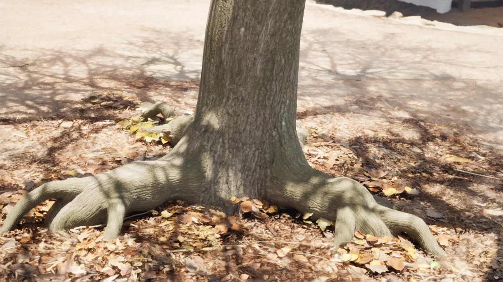
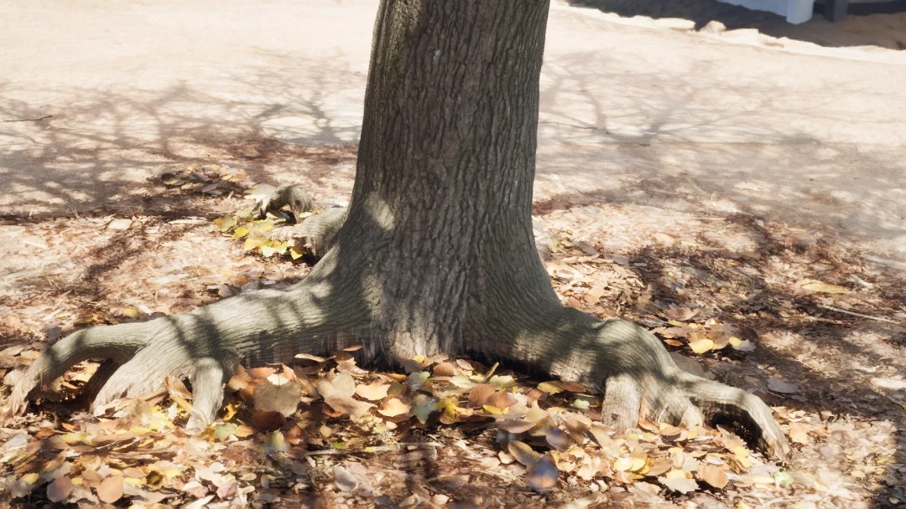
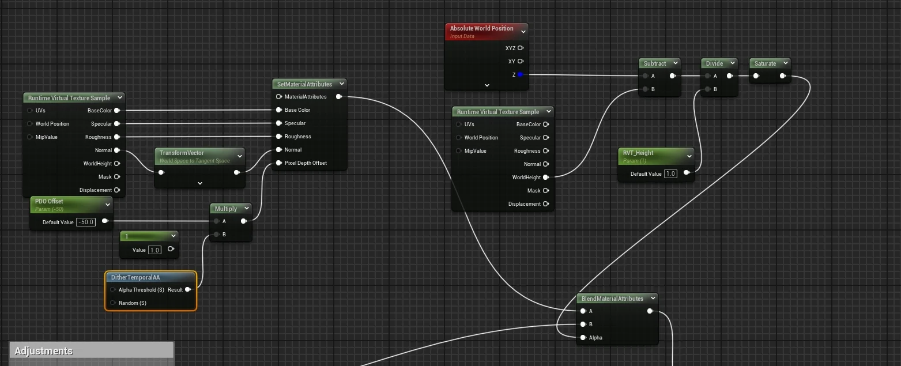
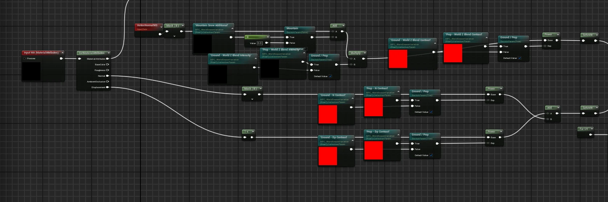
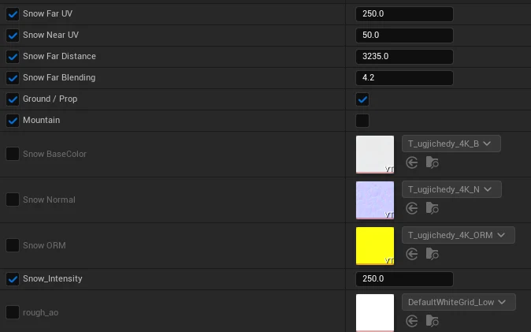
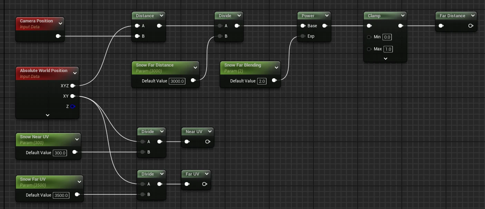
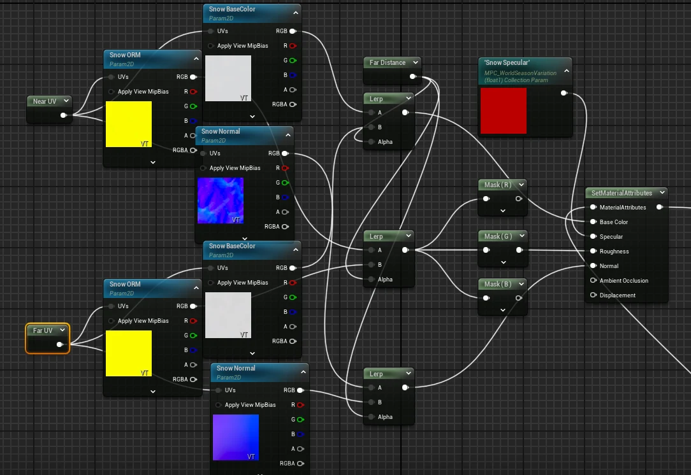

작업 요약
- 제작
- 지면과 에셋을 연결하는 RVT 블렌딩과 같은 환경에서 사계절을 바꾸는 머티리얼 시스템을 제작했다.
- 담당
- Landscape 레이어와 계절별 표면 표현을 만들고 현장에서 OptiTrack 계절 전환을 추가했다.
- 기술
- RVT · Blueprint · Enum_Season · MPC · OptiTrack
- 결과
- 레벨을 교체하지 않고 환경 전체의 계절을 바꾸고 추적 물체의 위치로 계절 전환을 제어했다.
제작 과정
지면을 칠할 수 있는 Landscape 레이어와 에셋을 지면에 자연스럽게 연결하는 RVT 블렌딩 및 하나의 환경에서 사계절을 전환하는 머티리얼 시스템을 제작했다.
1. 지면을 칠하고 에셋과 연결하기
환경을 구성할 때 지면을 원하는 재질로 칠할 수 있도록 흙과 자갈 및 물 등을 포함한 여섯 종류의 Landscape 레이어를 만들었다.
지면 위에 에셋을 배치한 뒤에는 바닥과 에셋이 따로 놓인 느낌이 들어 RVT에서 지면의 색과 표면 정보를 가져오고 에셋 아래쪽에 섞어 흙이 묻어나는 것처럼 연결했다.


2. 높이 차이로 RVT 블렌딩 범위 조절하기
에셋 전체에 지면 재질이 묻으면 기존 모양이 사라지기 때문에 지면과 가까운 부분에만 적용되도록 높이 차이를 마스크로 사용했다.
공유한 그래프에서는 Absolute World Position의 Z에서 RVT의 WorldHeight를 빼고 RVT_Height로 나눈 뒤 Saturate한 값을 BlendMaterialAttributes의 Alpha에 연결했다. 지면에 가까운 쪽에는 RVT 속성이 들어가고 높이가 올라갈수록 기존 에셋 속성으로 돌아가도록 구성했다.
RVT의 BaseColor와 Specular 및 Roughness를 가져오고 Normal은 World Space에서 Tangent Space로 변환해 연결했으며 경계 표현에는 DitherTemporalAA와 Pixel Depth Offset도 사용했다.

3. 레벨을 교체하지 않고 사계절 바꾸기
계절을 바꾸기 위해 레벨이나 머티리얼을 따로 교체하던 방식에서 벗어나 같은 환경 안에서 계절을 선택하면 전체 에셋이 함께 반응하도록 만들고 싶었다.
Blueprint에 Spring / Summer / Fall / Winter를 가진 Enum_Season을 만들고 선택한 계절을 Switch on Enum으로 나눠 Material Parameter Collection에 값을 전달하도록 구성했다.
봄에는 나뭇잎을 푸른 색으로 조절하고 가을에는 미리 정해둔 색 범위 안에서 잎사귀 색이 무작위로 바뀌도록 했으며 바닥에 배치한 낙엽에도 같은 계절 변화를 적용했다.
여름에는 비가 내린 뒤의 느낌이 나도록 월드 노이즈로 젖은 영역을 만들고 에셋 아래쪽에는 빗물이 흘러내리는 표현과 지면에는 젖은 웅덩이를 추가했다.


4. 표면 방향과 거리에 따른 눈 표현
겨울에는 위쪽을 향한 면에 눈이 덮이도록 VertexNormalWS의 Z 성분으로 마스크를 만들고 Displacement 맵을 사용해 눈의 두께를 표현했다.
경사가 큰 면에도 눈이 똑같이 쌓이면 어색해 45도보다 가파른 면에서는 눈이 적게 남고 완만해질수록 많이 쌓이도록 조절했으며 경계에는 노이즈를 섞어 일정한 선으로 끊기지 않도록 했다.
지면과 일반 에셋 및 산에 같은 값을 적용하기는 어려워 Ground / Prop과 Mountain 설정을 나누고 각 환경에 맞게 쌓임 강도와 대비를 조절할 수 있도록 만들었다.




5. 가까운 곳과 먼 곳의 텍스처 크기 나누기
카메라와 가까운 곳의 눈 디테일을 유지하면서 멀리 보이는 부분의 패턴 크기도 조절할 수 있도록 월드 좌표에서 Near UV와 Far UV를 따로 만들었다.
Camera Position과 Absolute World Position 사이의 거리를 Snow Far Distance로 나누고 Power와 Clamp를 거친 값을 블렌딩에 사용해 거리 변화에 따라 두 UV로 읽은 텍스처가 자연스럽게 이어지도록 했다.




6. 현장에서 추가한 OptiTrack 계절 전환
현장에서 움직임에 따라 계절이 바뀌는 퍼포먼스가 필요하다는 요청이 들어와 기존 계절 시스템에 Trigger Box를 연결하는 기능을 즉석에서 추가했다.
큐브 형태의 물체에 OptiTrack 마커를 붙이고 추적한 위치를 언리얼 안의 오브젝트에 연결해 정해둔 위치로 이동하면 해당 Trigger Box가 계절을 바꾸도록 구성했다.
12시 방향에는 겨울을 두고 3시에는 봄과 6시에는 여름 및 9시에는 가을을 연결했으며 각 영역에 들어가면 Enum_Season이 바뀌고 기존 Blueprint가 Material Parameter Collection에 값을 전달해 환경 전체가 반응하도록 했다.